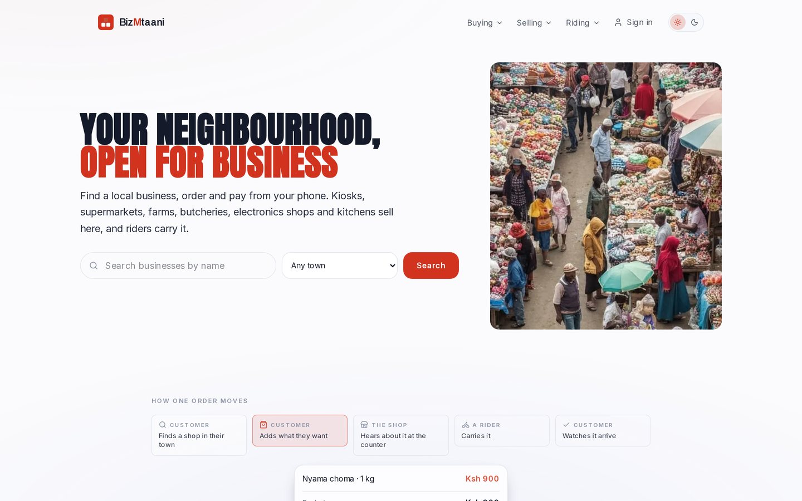
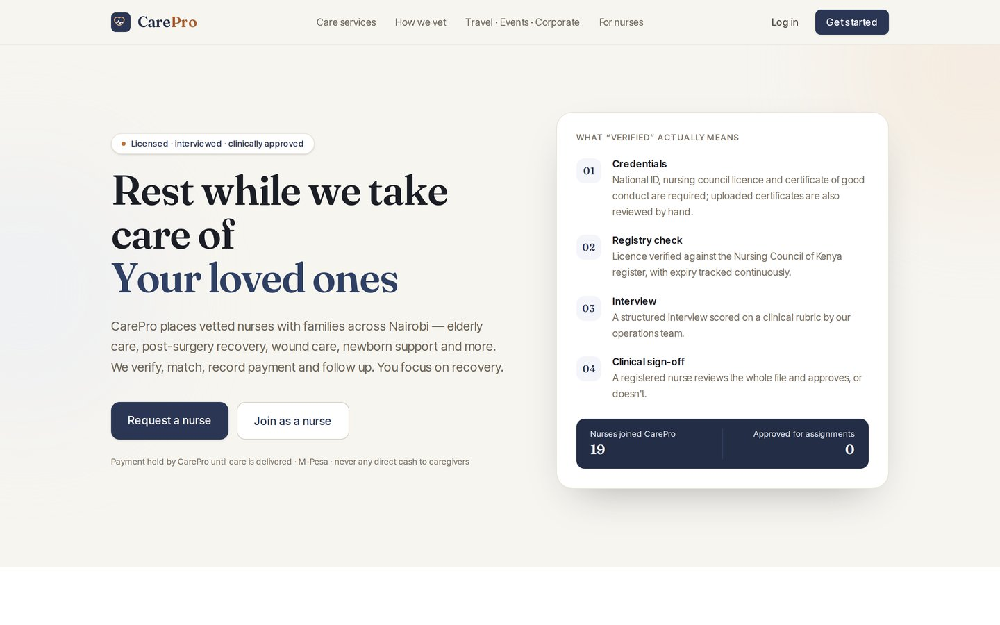
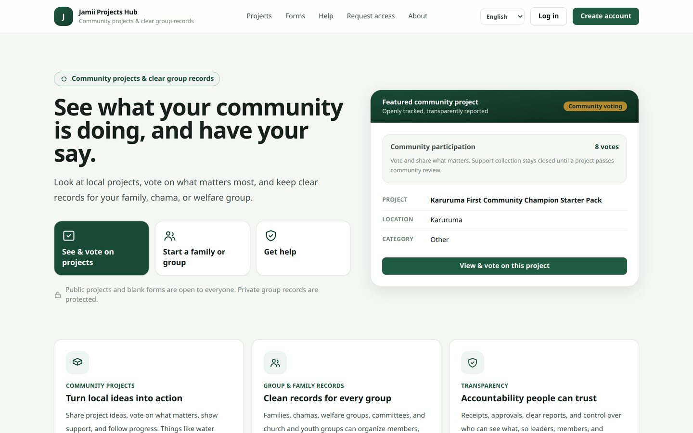
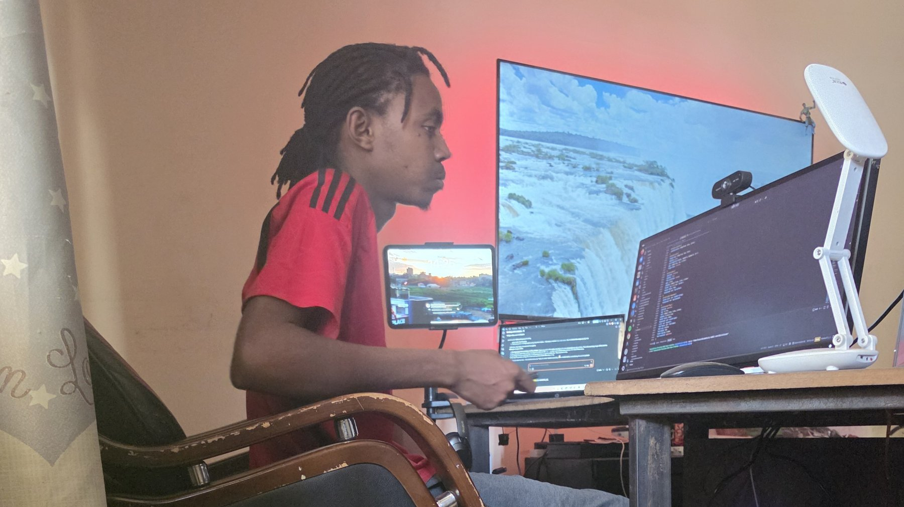

01
BizMtaani
A neighbourhood marketplace: local shops list what they sell, customers order and pay from a phone, and riders carry the order.
Live productOpen the record

Lesnar AINairobi · engineering studio
The register · eleven systems
BizMtaanilive productHazina Nomadslive productCareProlive productGen-Eatlive productJamii Projects Hublive productSentinelCoreinternal engineering systemCyphergovernance runtime, unqualifiedGreenhouse controllervalidated prototypeGold Traderresearch, paper onlyAerial systemsactive researchSensing and radarresearch direction
Selected work
Three of the five products that are open right now. Each screenshot is the surface as captured, and each record is contacted from your browser as you reach it.
01
A neighbourhood marketplace: local shops list what they sell, customers order and pay from a phone, and riders carry the order.
Live productOpen the record

02
Book a vetted nurse to care for someone at home, with payment arranged through the platform.
Live productOpen the record

03
See what projects your community is planning, vote on what matters, and keep clear records for a family, chama or welfare group.
Live productOpen the record

What we can do
Six kinds of work, and for each one the system that proves we have done it before. Follow any of them and you land on the record, with its limits stated.
The whole thing, not a layer of it: interface, backend, database, deployment and the operator screens the staff actually live in.
Shipped in BizMtaani, Gen-Eat, Hazina Nomads, CarePro and Jamii.
Taking money in Kenya the way people actually pay, and letting them order in the app they already have open.
Shipped in Gen-Eat, BizMtaani, CarePro; the reconciliation is opened up in Jamii.
Retrieval and tool-calling held as structure committed to a repository, with the decision boundary written down instead of buried in a prompt.
Built in Cypher, with the graph committed in Hazina Nomads. No accuracy or latency figure is claimed.
Checking a Linux server the way an attacker would look at it, and closing what is found - built as the studio's own tooling.
Built in SentinelCore and Cypher. No deployment, certification or detection-efficacy figure is claimed.
Getting it live and keeping one failure from becoming all of them.
Done for Gen-Eat and Hazina Nomads. Stopping either left the other answering; one test, not general fault immunity.
Work that leaves the screen: control that keeps running on a small board with no network to fall back on.
Built in the greenhouse controller, owner-attested rather than measured by us; aerial has never flown.
Looking for one of these for your own system? See what we build.
Six systems are built, held or researched rather than shipped. They are listed as such, with what each one has actually reached.

The studio
Eleven systems in the register, five open right now. If you have work that has to hold up in the real world, start with a conversation. The first one is free.
Or write directly to hello@lesnarai.co.ke.